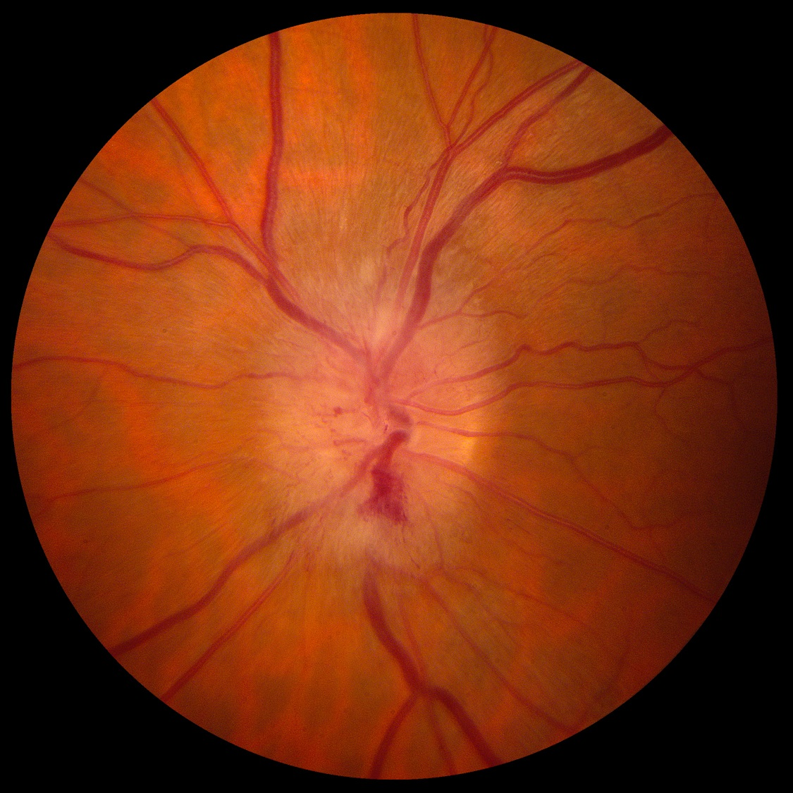
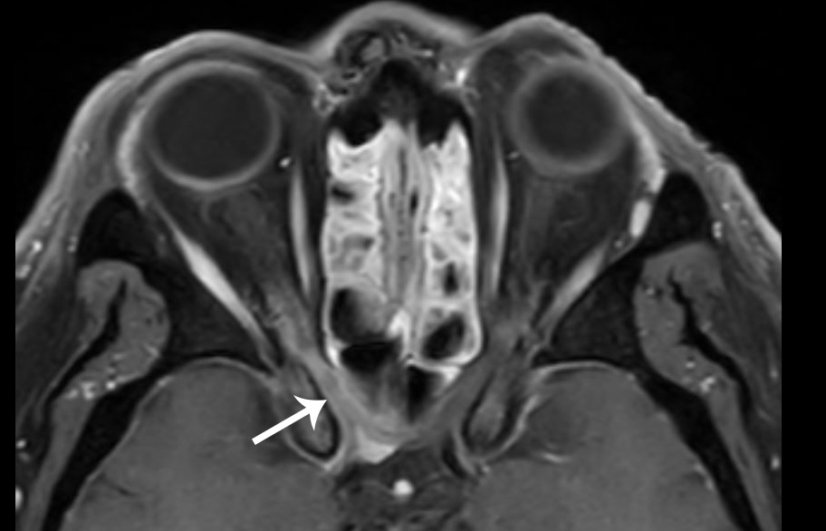

( of )
Correct: 0
Incorrect: 0

A 55 year old woman is reporting a new “blur spot in the vision of my right eye” since yesterday. She admits to heavy alcoholic intake. Medications include hydrochlorthiazide and simvastatin. This is the appearance of her visual fields. The right optic disc looks like this
Among the following choices, what is the most likely cause?
Incorrect
Correct!
but that would be a long shot. To be fair, you would only be certain of the diagnosis of NAION in follow-up: if visual function improves, it was inflammation; if visual function worsens, it could be inflammation, cancer, or a compressive lesion; if visual function remains unchanged, your presumptive diagnosis of NAION was probably correct. The chief concern in NAION is overtreated systemic hypertension that results in low blood pressure and optic disc hypoperfusion during the early morning hours, which could later precipitate NAION in the unaffected eye. Ambulatory monitoring of blood pressure is a good way to see if blood pressure drops excessively, especially during those vulnerable hours.

The defect in the right eye has a substantial border aligned to the horizontal meridian in the nasal field. That feature marks it as a “nerve fiber bundle defect” that involves the upper arcuate bundles made up of retinal ganglion cell axons that converge upon the upper pole of the optic disc. This arcuate bundle can be damaged in many conditions, including optic nerve compression, inflammation, ischemia, trauma, congenital dysplasia, and retinal artery or vein occlusion. It is typically spared by hereditary (Leber, OPA 1), metabolic (nutritional and vitamin deficiency, alcoholism), and toxic (ethambutol and others) conditions, which usually damage the maculopapillar bundles to create central or centrocecal scotomas in both eyes. The swelling of the right optic disc and the arcuate visual field defects bring up four choices: 1) inflammation of the optic nerve, also called “papillitis” or “optic neuritis,” 2) cancerous infiltration of the optic nerve, 3) extra-axial compression by tumor in the orbit or optic canal, and 4) ischemia of the optic nervehead. It excludes an intracranial compressive lesion, which does not typically cause optic disc swelling, and excludes retinal vascular occlusion, which should show abnormalities on the retinal surface. Her medication list favors an arteriosclerotic risk profile, a common precondition for “non-arteritic ischemic optic neuropathy (NAION).” If she had a symptom complex to suggest polymyalgia rheumatica or cranial neuralgia, you would have to consider “arteritic ischemic optic neuropathy” and order a blood sedimentation rate and C-reactive protein, place the patient on prophylactic corticosteroid, and perform a temporal artery biopsy. Otherwise—and most likely—she has NAION, a bland infarct in the optic disc caused by hypoperfusion. The sudden onset favors that diagnosis, but patients often report an acute onset when they simply noticed the deficit for the first time (“sudden awareness”). You would not be faulted for performing an orbit-based MRI to exclude inflammation, cancerous infiltration, or an orbital or intracanalicular compressive lesion,